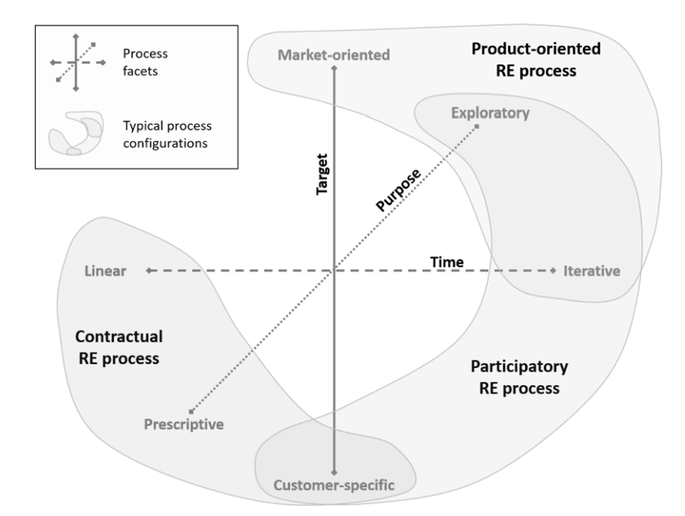

Processo de desenvolvimento
3. Processo de desenvolvimento de software
3.1 Metodologia
Levamos em conta as três naturezas apontadas por Sommerville: Técnicas, Humanas e Organizacionais, para formular perguntas que nos guiaram a abordagem de processo mais indicada para o nosso projeto.
- Questões Técnicas:
O sistema está sujeito a controle externo? Não.
Que tipo de sistema está sendo desenvolvido? Um aplicativo android
Qual o tamanho do projeto? É um projeto pequeno
- Questões Humanas:
Quais abordagens de desenvolvimento os desenvolvedores são familiarizados?
Toda a equipe está familiarizada com o Processo Unificado.
Quais tecnologias estão disponíveis para apoiar o desenvolvimento do sistema? Flutter, Android Studio e Python
- Questões Organizacionais:
É necessária uma especificação antes de começar a fase de implementação
do projeto? Sim. A maior parte dos requisitos já são conhecidos.
Um esquema de entrega incremental é
realista? Sim.
O cliente está disposto e disponível para participar do time de desenvolvimento?
Sim. Temos contato próximo ao cliente o que nos garante sua participação no
projeto.
3.2 Abordagem, Ciclo de Vida e Processo de Software
Após a discussão em equipe foi definida o seguinte viés de desenvolvimento:
| Abordagem | Ciclo de Vida | Processo |
|---|---|---|
| Dirigida a plano | Iterativo-Incremental | Processo unificado |
Dessa forma com o processo definido, será seguido a seguinte sequência de elaboração:
Figura 1: Diagrama do Processo Unificado.
A escolha do processo foi direcionada devido às suas fases de desenvolvimento as quais se encaixaram com o Processo de engenharia de requisitos.
3.3 Tarefas
Por fim, diante do processo de desenvolvimento estabelecido, é necessário relacionar tal, ao processo de engenharia de requisitos, que tem as seguintes fases:
Figura 2: Especificação da ER.
A seguir pode ser conferido como foi definido as fases da engenharia de requisitos, os métodos, ferramentas e artefatos produzidos ao final da etapa, tais fases não são inflexíveis e podem mudar e adequar-se ao contexto em que se encontra o processo
| Atividade | Método | Ferramenta | Artefatos |
|---|---|---|---|
| Elicitação e Descoberta | Entrevistas | Teams | Pedidos do cliente, esboço inicial |
| Análise e Consenso | Caso de Uso, Brainstorming, Conversas com o cliente, Análises de custo e benefícios, Análises de valor, Análise de Prioridade e Impacto e Entrevistas | Teams, discord e Github | Casos de Uso, Lista de RFs e RNFs |
| Declaração | Casos de Uso | Reunião | Casos de uso e visão de requisitos |
| Representação | Diagrama UML | LucidChart e astah | Diagrama de JCasos de Uso |
| Validação e Verificação | Casos de Uso, DoR, Feedback, INVEST, Revisão em Pares | Vitest e jest | Feedback do produto |
| Organização e Atualização | Casos de Uso | Mural, Word, Github | Backlog do produto |
O Processo Unificado já possui uma ER, com determinadas tarefas a serem seguidas. Para desenvolver as atividades do projeto é necessário escolher uma abordagem que se adeque às especificidades do software, e para isso utilizaremos um método proposto pela IREB (2022) no qual é apresentado diferentes facetas e configurações 'típicas' para um processo de ER, representado na Figura 3.

Figura 3: Facetas do processo de ER. IREB (2023).
Com base no que foi avaliado no sommerville e na abordagem de desenvolvimento já definida, identificamos a faceta do Processo de ER Contratual compartilhava seus principais pontos. Os pontos definidos para o projeto foram:
- Customer-specific: o produto foi encomendado por um cliente específico, em que o cliente é a principal fonte de requisitos.
- Iterativo-incremental: devido ser um produto pequeno mas complexo, dividí-lo em pequenas iterações se torna uma forma de gerenciar e minimizar os riscos, às vezes, mas manter um constante linear de entregas é útil, em virtude das dependências entre as funcionalidades.
- Prescritivo: é um contrato e o dono do produto exige que as funcionalidades sejam implementadas.
Etapas do Processo Unificado Aliadas às tarefas do Processo de Engenharia de Requisitos
Com o propósito de facilitar a execução das tarefas durante o desenvolvimento do projeto, foram identificadas as tarefas a serem realizadas nas 4 fases do Processo Unificado.
| Iniciação/Concepção | Elaboração | Construção | Transição |
|---|---|---|---|
| Elicitação e Descoberta, Analise e Consenso, Organização e Atualização, Declaração | Representação | Elicitação e Descoberta, Verificação e Validação, Organização e Atualização | Organização e Atualização, Verificação e Validação |
| Identificação de stakeholders e suas necessidades, Elaboração de uma visão inicial do sistema e Definição de requisitos de alto nível funcionais e não funcionais | Refinamento e análise dos requisitos iniciais, Modelagem de casos de uso, diagramas e artefatos de modelagem e Priorização dos requisitos com base nas necessidades dos stakeholders | Desenvolvimento dos componentes do sistema baseado nos requisitos, Verificação da definição dos requisitos e Atualização contínua da documentação a medida que ocorrer mudanças | Validação final dos requisitos em relação ao sistema implementado, Preparação para a implantação do sistema no ambiente de produção e Treinamento de usuários finais com base nos requisitos de uso do sistema |
3.4 Referências
Handbook IREB CPRE Foundation Level, Version 1.1.0, september 2022.
SCOTT, Kendall. The Unified process explained. Nov 26, 2001. Disponível em: https://www.informit.com/articles/article.aspx?p=24671&seqNum=8
MARSICANO, George. Requisitos de Software: Introdução a Engenharia de Requisitos (ER). Brasília, 2023. Disponível em: https://aprender3.unb.br/course/view.php?id=20236. Acesso em: 16 set. 2023.
SOMMERVILLE, Ian. Engenharia de software. 10.ed. São Paulo: Pearson Education do Brasil, 2018.
Histórico de versão
| Versão | Autor | Descrição | Data |
|---|---|---|---|
| 1.0 | Juan Pablo | Implementação do documento inicial | 27/09 |
| 1.1 | Harryson, Jefferson, João Lucas, Juan Pablo, Leandro, Thiago | Regulação e correção do documento | 27/09 |
| 1.2 | Jefferson | Correção dos Textos | 21/10 |
| 1.3 | João Lucas | Correção de tabela | 23/10 |